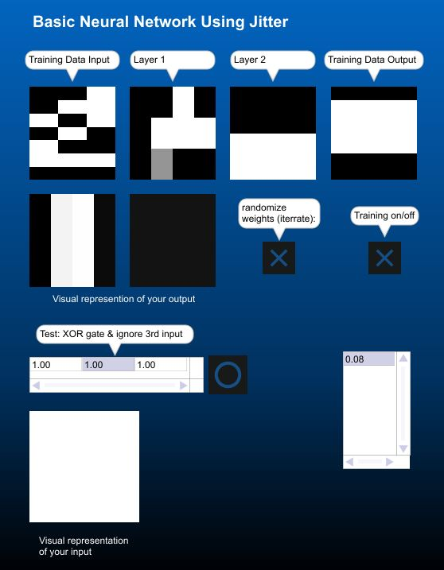
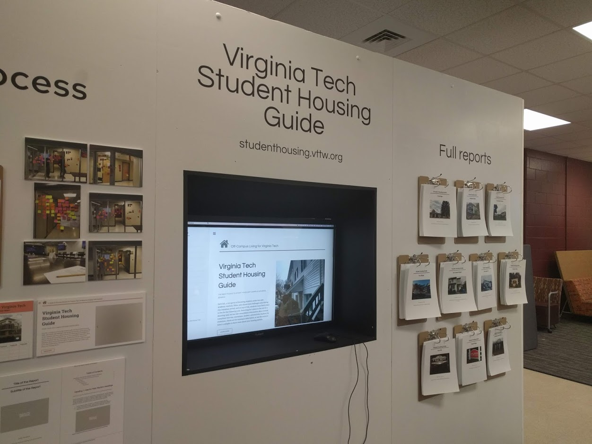
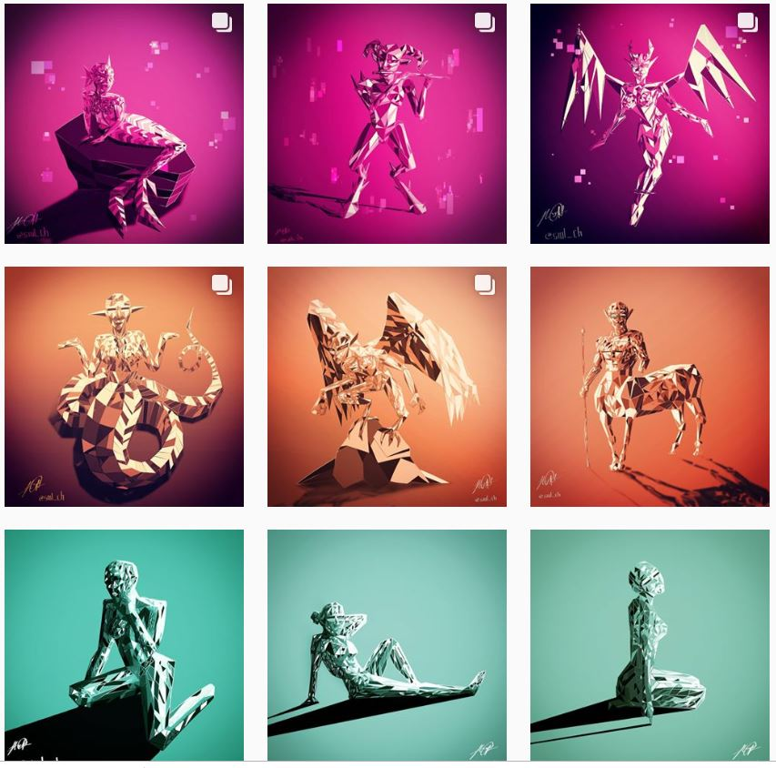

Machine Learning
 Using Max-MSP and JavaScript I created a basic multi-layer neural network.
With Jitter objects the Max patch allows you to both hear and see the network learning. Leveraging Max's audio capabilities I transformed the noise into something more appealing.
Hear the transformation:
Another Max sample:
Midterm project sample:
The final 16-channel piece was presented at Virginia Tech's "The Cube."
CaughtUp

I'm a Webmaster for the beta mobile application CaughtUp, employing tools like flutter and CSS. I also aid in the app's design and created our current logo.
CyberLeaders
The program is designed to help students broaden their understanding of policy, regulation, and the engineering challenges in Cybersecurity.
Student Housing Guide
The class project was to design a website to help upcoming alumni in search of student housing.
Dragon Boat

There are no star players in Dragon Boat, victory is achieved through determination, discipline, and team-work.
Drawing
I aim for a high standard of creativty and passion in everything I do. I have experience with graphical software such as Clip Studio, Corel Painter, and Photoshop.
Language and Culture

Due to my ethnical background I've had experience living abroad in Mexico. I'm fully bilingual with 10+ years of experience with Spanish.